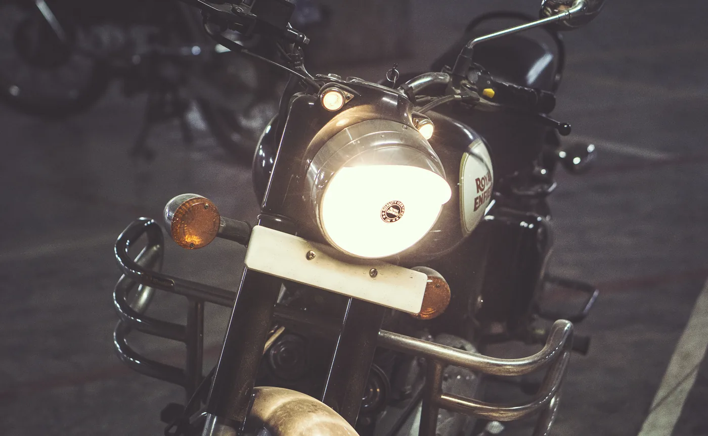

Chapter 9.11 covered a friction circle that shrinks in the rain while a rider can still see the road clearly. Night riding is nearly the opposite problem: the friction circle itself usually stays close to its dry-weather size, but the visual information Chapter 9.5's line and vision technique depends on shrinks dramatically, limited to whatever a headlight actually illuminates.
Chapter 9.11 closed by naming night riding as this chapter's subject, a distinct set of demands from rain's reduced grip. This chapter covers it.
The Headlight Sets a Hard Limit on Chapter 9.5's Vision Principle
Chapter 9.5 established that looking through a corner toward the exit produces a more accurate line, but that principle assumes the exit is actually visible. A headlight illuminates a limited, fixed distance ahead, which means a corner's exit, a road hazard, or a stopped vehicle may simply not be visible yet at a distance a rider could see easily in daylight — riding at a speed that keeps the actual stopping distance from Chapter 9.9 within the headlight's illuminated range, rather than at a speed that would be comfortable with daylight sightlines, is the direct, practical adjustment this limitation demands.
Reduced Contrast Hides Real Hazards
Beyond simple illumination distance, low light reduces contrast and depth perception, making road surface changes — a pothole, a patch of gravel, a change in pavement that might signal reduced grip similar to what Chapter 9.11 described — considerably harder to spot before reaching them than the same hazard would be in daylight. This is a genuine perceptual limitation, not a matter of insufficient attention, and it's part of why experienced night riders deliberately scan a wider area and rely more heavily on other cues — reflective markers, the behavior of other vehicles' lights, road edge lines — that remain visible even when surface texture itself is hard to judge.
A headlight doesn't just make the road dimmer — it hard-caps the distance a rider can actually see, which means the speed-versus-stopping-distance relationship this book has used throughout has to be matched against illumination range rather than daylight sightlines.

A motorcycle headlight in near-darkness — the sharp-edged pool of light it actually throws is the entire illuminated range Chapter 9.12 measures a rider's stopping distance against. Photo: Abhijeet Somvanshi, CC0, via Wikimedia Commons.
Using Other Vehicles' Lights as Information
The headlights and taillights of other vehicles carry real information beyond simply marking their position — a car's headlights sweeping across the road ahead can reveal the shape of an upcoming curve before it's directly visible, and brake lights appearing suddenly on a vehicle ahead often signal a hazard before it's within a rider's own headlight range. Reading this indirect lighting information is a genuine extension of the scanning habits Chapter 9.9 described for traffic, adapted to the specific, limited visual environment night riding creates.
A Common Misconception, Cleared Up Early
It's easy to assume night riding is simply daytime riding done more cautiously, with the same techniques applied at a uniformly reduced pace. The specific adjustment this chapter describes — matching speed to illuminated range rather than to a generic sense of caution — is a distinct calculation from the general slowdown rain riding in Chapter 9.11 called for, since the underlying limitation is visual rather than grip-based. A rider correctly slowing for rain's reduced friction circle isn't necessarily riding at a speed appropriate for their headlight's illuminated distance, and the two adjustments need to be reasoned through separately even when conditions combine.
Where This Leads
Rain and night both modify road riding within the same basic paved environment this part has assumed throughout. Off-road riding changes the surface itself entirely, removing the reliable, continuous friction circle nearly every technique so far has depended on. Chapter 9.13 turns to off-road fundamentals next.
Key Concepts to Remember
- A headlight hard-caps visible distance, so speed at night should be matched to actual stopping distance staying within illuminated range, not daylight comfort.
- Reduced contrast at night makes road surface hazards genuinely harder to spot, a perceptual limitation rather than an attention problem.
- Night riding's speed adjustment is a distinct calculation from rain's grip-based adjustment, and both need separate reasoning even when conditions combine.
Cross-References
| ← Ch. 9.5 | Established looking through a corner toward the exit; this chapter shows a headlight hard-limiting how far that exit can actually be seen. |
| ← Ch. 9.9 | Established following distance and scanning for traffic; this chapter extends that scanning to reading other vehicles' lights as indirect information. |
| ← Ch. 9.11 | Covered rain's grip-based speed adjustment; this chapter distinguishes night riding's visual-based adjustment as a separate calculation. |
| → Ch. 9.13 | Covers off-road fundamentals, where the surface itself changes rather than grip or visibility alone. |